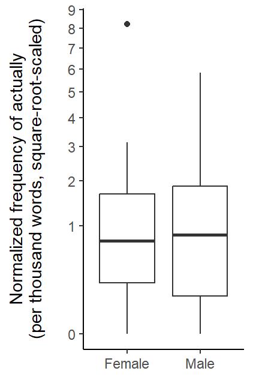

Modeling clustered frequency data II: Texts of disproportionate length
corpus linguistics
regression
clustered data
frequency data
bias
imbalance
negative binomial
This blog post illustrates a number of strategies for modeling clustered count data. It describes how they handle the non-independence among observations and what kind of estimates they return. The focus is on a situation where texts have very different lengths.
When describing or modeling corpus-based frequency data, the fact that a corpus is divided into text files has consequences for statistical modeling. For count variables (which corpus linguists often summarize using normalized frequencies), there are several options. This blog post contrasts different regression approaches to clustered count data and clarifies how they deal with unequal text lengths.
R setup
library(tidyverse) # for data wrangling and visualizationlibrary(dataverse) # for downloading data from TROLLinglibrary(marginaleffects) # to compute model-based estimateslibrary(MASS) # to fit a negative binomial regression modellibrary(kableExtra) # for drawing html tableslibrary(lme4) # to fit mixed-effects regression modelslibrary(lattice) # for data visualizationlibrary(gamlss) # to draw the density of the gamma distributionlibrary(uls) # pak::pak("lsoenning/uls")
Case study: Actually in the Spoken BNC2014
Our illustrative data records the distribution of actually in the Spoken BNC2014 (Love et al. 2017), which was analyzed in Sönning and Krug (2022). For more information on the dataset, please refer to Sönning and Krug (2021).
We start by downloading the data from TROLLing:
dat <-get_dataframe_by_name(filename ="actually_data_2014.tab",dataset ="10.18710/A3SATC",server ="dataverse.no",.f = read.csv,original =TRUE )
In line with Sönning and Krug (2022), we remove speakers who contributed fewer than 100 words to the corpus, and for whom information on age and gender is missing.
d <- dat |>filter( total >100, Age_range !="Unknown",!(is.na(Gender)))
In this blog post, we will concentrate on speakers aged 70 or older.
d <- d |>filter(Age_range %in%c("70-79", "80-89", "90-99")) |>droplevels()
We add a new variable to the data frame: the speaker-specific normalized frequency of actually, expressed as ‘per thousand words’:
d$rate_ptw <- (d$count / d$total) *1000
We reduce the data frame to the variables we need for analysis and rename a few columns for consistency and clarity.
The key interest in the following is in the usage rate of actually (expressed as a normalized frequency) in conversational speech. Two subgroups of British speakers are compared: Male speakers aged 70 or older (“Male 70+”), and female speakers aged 70 or older (“Female 70+”). The questions guiding our analyses are:
What is the normalized frequency of actually in the two groups?
Does the usage rate of actually differ between the groups?
Data description
We start by inspecting some key characteristics of the data. First we examine the distribution of speakers across the groups, which turns out to be roughly balanced:
table(d$gender)
Female Male
25 31
Next, we consider the distribution of word counts across speakers (i.e. the total number of word tokens each individual contributed to the corpus). Figure 1 shows a very skewed profile, with one speaker showing a disproportionately high word count.
Draw Figure
d |>ggplot(aes(x = n_words)) +geom_dotplot(binwidth =3000, stackratio = .9, method ="histodot") +theme_dotplot() +scale_x_continuous(labels = scales::label_comma(), expand =c(.01, .01)) +scale_y_continuous(expand =c(0, 0)) +annotate("text", x =150000, y = .5, label ="Each dot represents a speaker", color ="grey30", size =3.5) +xlab("Number of word tokens contributed to the corpus")
Figure 1: Distribution of word counts across speakers from the Spoken BNC2014 aged 70 or older, excluding individuals who contributed fewer than 100 words to the corpus.
To see how the outcome variable is distributed at the speaker level, we draw a dot diagram of the speaker-specific usage rate of actually, expressed as “per thousand words”. Figure 2 shows a skewed arrangement, with a few individuals using the word at an exceptionally high rate.
Figure 2: Distribution of speaker-specific usage rates of actually in our data subset, per thousand words.
Due to the skew in the distribution, we use a square-root transformation for visual group comparisons. Figure 3 reassures us that this effectively removes the skew.
Figure 3: Distribution of speaker-specific usage rates of actually in our data subset, per thousand words, square-root-scaled.
Now we inspect the (square-root-scaled) distribution of speaker-specific rates of actually by Gender. Figure 4 shows that the median rate is very similar in the two groups. Between-speaker variation, as indicated by the height of the boxes, is slightly larger among male speakers.
Draw Figure
d |>ggplot(aes(x = gender, y = rate_ptw)) +geom_boxplot() +scale_y_sqrt(breaks =0:10) +theme_classic_ls() +ylab("Normalized frequency of actually\n(per thousand words, square-root-scaled)\n") +xlab(NULL)

Figure 4: Boxplot showing the distribution of speaker-specific usage rates of actually (per thousand words, square-root-scaled) by Gender.
Let us also draw a bubble chart, which simultaneously takes into account the speaker-specific (i) word count and (ii) usage rate of actually. This means that we look at the distribution of the data points behind the boxplot.
In Figure 5, each individual appears as a circle and the size of this circle is proportional to the speaker word count. Individuals contributing an overabundance of words to the corpus (and our data subset) appear as big circles. We observe that the person with the highest word count (the biggest circle) is male, with a relatively low rate of actually. Among female speakers, the two individuals with the largest word counts also show the highest usage rates.
Figure 5: Bubble chart showing the distribution of speaker-specific usage rates of actually (per thousand words, square-root-scaled) by Gender, with the size of circles reflecting the total word count for a speaker.
A key insight that will emerge from our comparison of modeling approaches will be that they respond differently to this data feature, i.e. the combination of disproportionately high word counts and relatively high or low occurrences rates, for specific texts or speakers. Before we turn to regression analysis, however, let us jot down numerical summaries for the data.
Descriptive measures: Subcorpus frequencies and mean speaker frequency
There are two straightforward ways of summarizing the frequencies in the two subgroups. Egbert and Burch (2023, 105) refer to these as corpus frequency and mean text frequency. In the present setting, we will talk about subcorpus frequencies (Male 70+ subcorpus vs. Female 70+ subcorpus) and mean speaker frequencies.
To obtain the subcorpus frequency of actually in each group, we divide the total number of actually-tokens by the subcorpus size. We multiply this rate by 1,000 to obtain a normalized frequency of ‘per thousand words’:
d |>group_by(gender) |> dplyr::summarize(n_actually =sum(n_tokens),corpus_size =sum(n_words),subcorpus_frequency =round(n_actually/corpus_size*1000, 2) ) |>kable()
gender
n_actually
corpus_size
subcorpus_frequency
Female
731
257786
2.84
Male
403
522671
0.77
This gives us a subcorpus frequency of 2.84 ptw for female speakers and 0.77 ptw for male speakers. We get the same estimates when using CQPweb (Hardie 2012) to run a restricted corpus query:
Another way of estimating the average rate of actually in each subgroup is to proceed in two steps: We first determine the speaker-specific normalized frequencies (i.e. the variable rate_ptw) and then we average over these within each group. This yields much more similar frequency estimates, which is consistent with what we saw in Figure 4 above.
d |>group_by(gender) |> dplyr::summarize(mean_speaker_frequency =round(mean(rate_ptw), 2) ) |>kable()
gender
mean_speaker_frequency
Female
1.21
Male
1.23
The difference between these two ways of measuring frequency is that while the mean speaker frequency gives the same weight to each person, the corpus frequency weights speakers in proportion to the number of words they contribute to the corpus. In the present case, there is no reason why certain individuals should inform our frequency estimate more than others, so we clearly prefer the mean speaker frequency.
We keep these differences in mind as we consider alternative ways of modeling the data.
Poisson regression
We start with a Poisson regression model, which does not take into account the grouping structure of the data. This means that it turns a blind eye on the speakers in our data and considers the actually tokens (and the corpus) as an unstructured bag of words.
We can fit a Poisson model with the glm() function:
m <-glm( n_tokens ~ gender +offset(log(n_words)),data = d,family ="poisson")
Here is the regression table:
summary(m)
Call:
glm(formula = n_tokens ~ gender + offset(log(n_words)), family = "poisson",
data = d)
Coefficients:
Estimate Std. Error z value Pr(>|z|)
(Intercept) -5.86547 0.03699 -158.59 <2e-16 ***
genderMale -1.30230 0.06204 -20.99 <2e-16 ***
---
Signif. codes: 0 '***' 0.001 '**' 0.01 '*' 0.05 '.' 0.1 ' ' 1
(Dispersion parameter for poisson family taken to be 1)
Null deviance: 1615.2 on 55 degrees of freedom
Residual deviance: 1148.4 on 54 degrees of freedom
AIC: 1321.2
Number of Fisher Scoring iterations: 5
We use the {marginaleffects} package (Arel-Bundock, Greifer, and Heiss 2024) to calculate model-based predictions for male and female speakers. These coincide with the corpus frequencies reported above:
The function comparisons() in the {marginaleffects} package allows us to compare the two groups in relative terms: The usage rate of male speakers is estimated to be only 27% as large as that of female speakers:
A Quasi-Poisson model includes a dispersion parameter, which adjust inferences to account for the lack of fit of the simple Poisson model. The dispersion parameter \(\phi\) is estimated on the basis of a global \(\chi^2\) statistic of model (mis)fit, and it is then used to adjust the standard errors returned by the model, which are multiplied by \(\sqrt{\phi}\). For some more background on this way of accounting for overdispersion, see this blog post.
We can run a Quasi-Poisson model as follows:
m <-glm( n_tokens ~ gender +offset(log(n_words)),data = d,family ="quasipoisson")
The model is summarized in the following table:
summary(m)
Call:
glm(formula = n_tokens ~ gender + offset(log(n_words)), family = "quasipoisson",
data = d)
Coefficients:
Estimate Std. Error t value Pr(>|t|)
(Intercept) -5.8655 0.1861 -31.521 < 2e-16 ***
genderMale -1.3023 0.3121 -4.172 0.00011 ***
---
Signif. codes: 0 '***' 0.001 '**' 0.01 '*' 0.05 '.' 0.1 ' ' 1
(Dispersion parameter for quasipoisson family taken to be 25.31282)
Null deviance: 1615.2 on 55 degrees of freedom
Residual deviance: 1148.4 on 54 degrees of freedom
AIC: NA
Number of Fisher Scoring iterations: 5
The regression table tells us that the dispersion parameter is estimated to be roughly 25, which means that the standard errors for the Quasi-Poisson model should be 5 times (\(\sqrt{25}\)) larger than in the Poisson model.
Importantly, however, the regression coefficients themselves do not change, and neither do the model-based predictions. We get the same point estimates, though with (appropriately) wider confidence intervals:
Negative binomial regression explicitly takes into account the speakers, and models the observed variability in the usage rate of actually using a probability distribution. The model therefore includes an additional parameter that represents the variability of usage rates. As discussed in more detail in this blog post, this parameter controls the shape of a gamma distribution, which in turn describes the multiplicative variation in speaker-specific rates. For some more background, see this blog post.
This is illustrated in Figure 6, which shows high variability among speakers.
Figure 6: The gamma distribution describing between-speaker variability in the usage rate of actually.
Since this is a probability distribution, we can summarize the estimated distribution of speakers around their subgroup means. The following code finds the quartiles of the distribution:
qGA(p =c(.25, .5, .75), mu =1, sigma =1/sqrt(0.9347)) |>round(2)
[1] 0.27 0.67 1.39
This tells us that ratios of 0.27 and 1.39 mark the interquartile range: The central 50% of the speakers are within this interval. Interestingly, and perhaps counterintuitively, the median of this gamma distribution is 0.67, meaning that half of the speakers have a ratio below this mark. Let us also see how many speakers have ratio above and below 1:
pGA(q =1, mu =1, sigma =1/sqrt(0.9347)) |>round(2)
[1] 0.64
64% of the speakers have a ratio below 1, meaning that around two-thirds of the speakers actually show a usage rate below the estimated subgroup mean. We will return to this rather puzzling feature of the negative binomial model further below.
We can fit a negative binomial model using the function glm.nb() in the {MASS} package (Venables and Ripley 2002):
m <- MASS::glm.nb( n_tokens ~ gender +offset(log(n_words)),data = d)
This produces the following regression table:
summary(m)
Call:
MASS::glm.nb(formula = n_tokens ~ gender + offset(log(n_words)),
data = d, init.theta = 0.9346725065, link = log)
Coefficients:
Estimate Std. Error z value Pr(>|z|)
(Intercept) -6.66312 0.22513 -29.596 <2e-16 ***
genderMale 0.02303 0.30582 0.075 0.94
---
Signif. codes: 0 '***' 0.001 '**' 0.01 '*' 0.05 '.' 0.1 ' ' 1
(Dispersion parameter for Negative Binomial(0.9347) family taken to be 1)
Null deviance: 60.329 on 55 degrees of freedom
Residual deviance: 60.323 on 54 degrees of freedom
AIC: 339.12
Number of Fisher Scoring iterations: 1
Theta: 0.935
Std. Err.: 0.210
2 x log-likelihood: -333.121
Frequency estimates based on this model are much closer to the mean speaker frequencies we reported above:
Another way of accounting for the structure in the data is to use a Poisson regression model with random intercepts on Speaker. This model is similar to the negative binomial since it also represents the observed variation among speakers using a probability distribution. Between-speaker variation is modeled on the scale of natural logarithms using a normal distribution. On the scale of the actual occurrence rates, this translates into a log-normal distribution. For a more detailed discussion of the structure of this model, see this blog post.
We will illustrate this once we have fit our model using the function glmer() in the R package {lme4}(Bates et al. 2015).
m <-glmer( n_tokens ~ gender +offset(log(n_words)) + (1|speaker), data = d,family ="poisson",control =glmerControl(optimizer="bobyqa"))
Here is a condensed regression table:
arm::display(m)
glmer(formula = n_tokens ~ gender + offset(log(n_words)) + (1 |
speaker), data = d, family = "poisson", control = glmerControl(optimizer = "bobyqa"))
coef.est coef.se
(Intercept) -7.27 0.25
genderMale 0.15 0.33
Error terms:
Groups Name Std.Dev.
speaker (Intercept) 1.05
Residual 1.00
---
number of obs: 56, groups: speaker, 56
AIC = 338.4, DIC = -294.8
deviance = 18.8
The table tells us that the standard deviation of the random intercepts, i.e. the parameter describing the spread of the normal distribution representing between-speaker variation, is 1.05. Figure 7 shows the inferred distribution of speaker intercepts on the log scale.
Figure 7: The normal distribution describing between-speaker variability in the usage rate of actually on the scale of natural logarithms.
As discussed in detail in this blog post, there are two types of predictions we can calculate for the random-intercept Poisson model. Seeing that we are interested in the occurrence rate of actually rather than its natural logarithm, we will want to back-transform model-based predictions to the scale of normalized frequencies. Since there is between-speaker variation, our model-based estimate will have to somehow average over speakers. The question is whether we want to average over speakers on the scale of natural logarithms (the model scale) or on the scale of normalized frequencies (the data scale).
By averaging on the data scale of normalized frequencies, we obtain the mean usage rate across speakers.
By averaging on the model scale of log normalized frequencies, and then back-transforming this mean log rate, we obtain the median usage rate across speakers.
This blog post provides a detailed illustration of these two types of frequency estimates.
Through appropriate combination of the regression coefficients for the fixed effects, we obtain averages over speakers on the model scale. This is the estimated mean log rate of actually in the population of interest. We can back-transform this into a normalized frequency. This summary measure, however, does not represent the mean over normalized frequencies, since the averaging was done on another scale (the model scale).
In our model, the intercept represents the mean log rate for female speakers. If we add the coefficient for the predictor Gender, we get the mean log rate for male speakers. Back-transforming these values gives us:
These frequency estimates are lower than the ones we have obtained above. This is because they represent the median usage rate of actually, and in a distribution that skewed toward large values, the median is always smaller than the mean.
As illustrated in this blog post, we can also use the model to calculate mean normalized frequencies, using the model intercept and the random-effects variance:
\[
\textrm{mean normalized frequency} = \textrm{exp}(\textrm{intercept} + \frac{\textrm{random-intercept variance}}{2})
\] We first extract the random-intercept variance from the model object:
We can also obtain these two types of estimates using the {marginaleffects} package. To get the mean log rate of actually, back-transformed to the normalized frequency scale, we run the following code. The argument re.form = NA tells the function to ignore the between-speaker variation:
To get (something close to) the mean normalized frequencies we calculated above, we can ask the function avg_predictions() to average predictions over the speakers in the sample. This means that the by-speaker random intercepts are incorporated into the model predictions. The model-based speaker intercepts are used to get a predicted normalized frequency for each speaker, and these are then averaged.
The result is not identical to the one we got above due to shrinkage: The speaker intercepts are partially pooled, and their variability is therefore smaller than implied by the random-intercept standard deviation.
The relative difference between the groups remains the same:
Figure 8 compares the estimated average predictions we have collected in this blog post. For a point of reference, our descriptive summaries are shown in grey: The dotted lines are the two (sub)corpus frequencies, and the solid lines – which are almost identical in the groups – are the mean speaker frequencies.
Our first observation is that estimates based on the Poisson and Quasi-Poisson model coincide with the plain subcorpus frequencies – as a result, they suffer from the imbalanced word counts across speakers. Just like the corpus frequency, both models give much greater weight to speakers who contributed a large number of words to the corpus. As we have noted above, this is undesirable in the present case. We therefore conclude that the Poisson and Quasi-Poisson model are inadequate for the data at hand, since they do not guard against imbalances.
The other models produce estimates that are close(r) to the mean speaker frequencies. The three models agree in the statement that the difference between the two groups, “Male 70+” and “Female 70+”, are minor. The estimates from the negative binomial model and the mean normalized frequency predicted by the Poisson random-intercept model are virtually indistinguishable from the mean speaker frequencies.
Finally, the median normalized frequency predicted by the Poisson random-intercept model is considerably lower.
Figure 8: Comparison of model-based predictions for the average usage rate of actually in the two subgroups.
Summary
This blog post compared different approaches to modeling corpus-based frequency data. The regression models we considered address the non-independence of observations in the data in different ways and therefore return different estimates of average normalized frequencies. Differences between these estimates correspond to differences between two broad ways of measuring frequency: corpus frequency and mean (or median) text frequency. Models that account for the clustering in the data yield analogues of mean text frequencies, which are more suitable if texts differ in length, or speakers differ in the number of word tokens they contribute to a corpus. Models in this second group differ, however, in the way they average over speaker- (or text-)specific frequencies. Thus, we can summarize a distribution of frequencies on the log scale, and then transform this mean log rate into a normalized frequency. Or we can summarize the distribution on the scale of normalized frequencies. From the viewpoint of interpretation, it is essential to realize that these two estimates represent the median and the mean of the distribution of text-level normalized frequencies. We saw how the {marginaleffects} package can be used to construct both types of predictions.
References
Arel-Bundock, Vincent, Noah Greifer, and Andrew Heiss. 2024. “How to Interpret Statistical Models Using marginaleffects for R and Python.”Journal of Statistical Software 111 (9): 1–32. https://doi.org/10.18637/jss.v111.i09.
Bates, Douglas, Martin Mächler, Ben Bolker, and Steve Walker. 2015. “Fitting Linear Mixed-Effects Models Using lme4.”Journal of Statistical Software 67 (1): 1–48. https://doi.org/10.18637/jss.v067.i01.
Egbert, Jesse, and Brent Burch. 2023. “Which Words Matter Most? Operationalizing Lexical Prevalence for Rank-Ordered Word Lists.”Applied Linguistics 44 (1): 103–26. https://doi.org/10.1093/applin/amac030.
Hardie, Andrew. 2012. “CQPweb — Combining Power, Flexibility and Usability in a Corpus Analysis Tool.”International Journal of Corpus Linguistics 17 (3): 380–409. https://doi.org/10.1075/ijcl.17.3.04har.
Love, Robbie, Claire Dembry, Andrew Hardie, Vaclav Brezina, and Tony McEnery. 2017. “The Spoken BNC2014: Designing and Building a Spoken Corpus of Everyday Conversations.”International Journal of Corpus Linguistics, 319–44. https://doi.org/10.1075/ijcl.22.3.02lov.
Sönning, Lukas, and Manfred Krug. 2021. “Actually in contemporary British speech: Data from the Spoken BNC corpora.” DataverseNO. https://doi.org/10.18710/A3SATC.
———. 2022. “Comparing Study Designs and down-Sampling Strategies in Corpus Analysis: The Importance of Speaker Metadata in the BNCs of 1994 and 2014.” In Data and Methods in Corpus Linguistics, edited by Ole Schützler and Julia Schlüter, 127–60. Cambridge University Press. https://doi.org/10.1017/9781108589314.006.
![]()